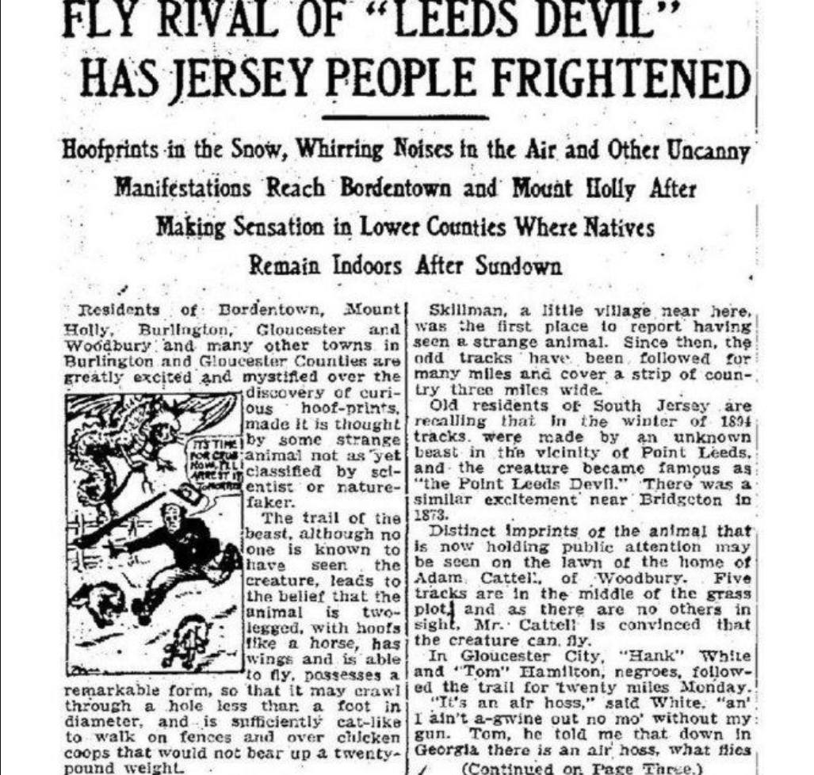
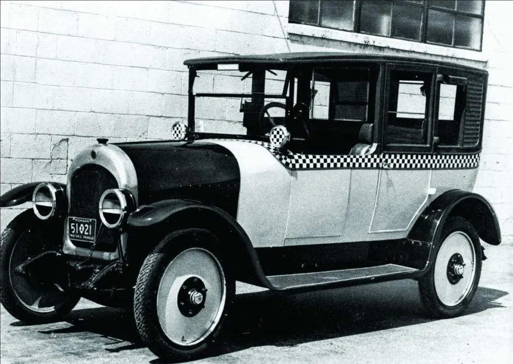

The Jersey Devil is a legendary bipedal cryptid that is said to live in the Pine Barrens of Southern New Jersey.
The Pine Barrens is a dense, massive 1.1 million-acre protected forest and natural ecosystem. It covers roughly
around 22% of New Jersey across seven counties. The Jersey Devil dates back all the way to 1735, where a woman
from New Jersey known as Jane Leeds had 12 children, and upon learning she was pregnant with her 13th, was so
upset that she cried out in despair saying the child should be the devil. Legend has it the baby was born normal,
before transforming into a winged, dragon-like creature with hooves, a horse-like head, and a forked tail.
Bonaparte and the Devil (1812)
Napoleon's older brother, Joseph Bonaparte, claimed he saw the Jersey Devil while hunting around
his Bordentown estate.

Trenton Times story on a string of Jersey Devil sightings in January 1909. Source.
Devil Craze (1909)
Navy Commander allegedly saw the Jersey Devil and shot it while testing cannon balls at Hanover Mills Works in the Pine Barrens.
This was only 1 of nearly 1,000 reports coming from eyewitnesses throughout South Jersey in January of 1909. So much so that bloodhounds
refused to follow the tracks.
A taxi driver in Salem City allegedly encountered the Jersey Devil when he was changing a tire. The man told the police
the creature was pounding on the roof of the cab.

What the taxis would had looked like at the time of the incident. Source.